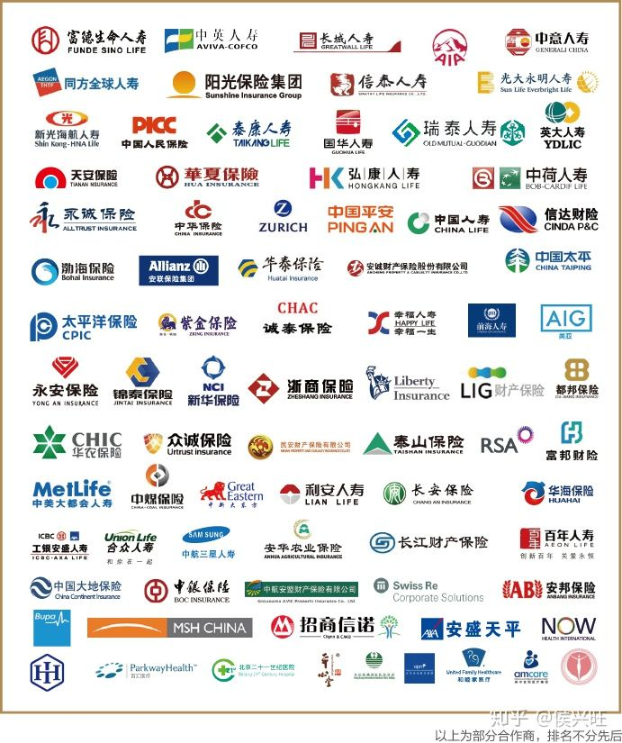
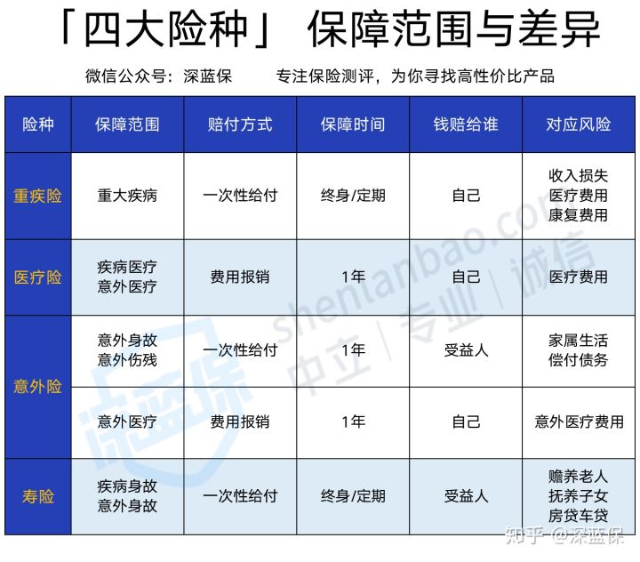
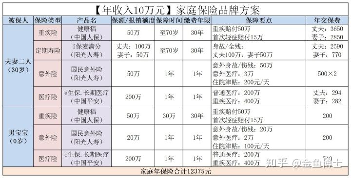
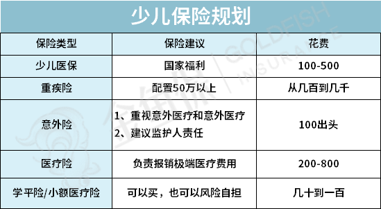

保险知识
QQ
微信
Github
博客园
CSDN
保险知识
一般的保险包括重疾险、医疗险、意外险和寿险
重疾险：如果罹患重疾，一次赔付几十万，可用来弥补巨额医疗支出，以及无法工作的收入损失。
医疗险：可以补充国家医保报销的不足，应对大额医疗费用开支。
意外险：如果家庭成员意外受伤，可以得到一笔高额赔偿，杠杆非常高。
定期寿险：如果家里挣钱最多的人突然离世，寿险赔款可以用来还房贷、赡养父母子女，不用担心家人的生计。
相关链接
国家统计局
中国银行保险监督管理委员会
保险公司
中国人寿
中国人寿保险（集团）（简称中国人寿）是国有特大型金融保险企业公司；总部设立在北京，世界500强企业、中国品牌500强，属中央金融企业。 [1] 公司前身是成立于1949年的原中国人民保险公司，1996年分设为中保人寿保险有限公司，1999年更名为中国人寿保险公司。
中国人保
中国人民保险集团股份有限公司（简称中国人保或人民保险）成立于1949年，是一家综合性保险（金融）公司，世界五百强之一，也是世界上最大的保险公司之一，属中央金融企业
中国平安
中国平安保险（集团）股份有限公司（以下简称“中国平安” ，“平安保险”，“中国平安保险公司”，“平安集团”）于1988年诞生于深圳蛇口，是中国第一家股份制保险企业
太平洋保险
中国太平洋保险公司，1991年经中国人民银行银复[1991]149号文批准由交通银行筹建的股份制保险企业，本公司于1991年5月13日在国家工商局注册成立，注册资本为10亿元
泰康保险
泰康人寿保险股份有限公司系1996年8月22日经中国人民银行总行批准成立的全国性、股份制人寿保险公司，公司总部设在北京
中国太平
中国太平保险集团有限责任公司，简称“中国太平” ，于1929年在上海创立，是中国历史悠久的民族保险品牌，也是唯一一家总部位于香港的中管金融机构，是中国保险业第一家在境外上市的中资保险企业
新华保险
新华人寿保险股份有限公司（简称新华保险公司或新华人寿），成立于1996年9月，总部位于北京市，是一家大型寿险企业
友邦保险
友邦保险控股有限公司及其附属公司（统称「友邦保险」或「本集团」）集团总部设于中国香港，独立上市人寿保险集团
阳光保险
阳光保险成立于2005年7月，国内七大保险集团之一，中国500强企业
保险公司联系方式
中国人寿：潢川客户服务中心 河南省信阳市潢川县宁西路李夹空 0376-3013165 中国人寿官方客服热线电话95519
中国人保：潢川县城关机场新区11区7号 0376-6117749 中国人保官方客服热线电话95518
保险经验
1. 意外险能保的“意外”事件有特指——“外来的、突发的、非本意的、非疾病的”。
2. 所以，酗酒、中暑、高原反应、非集体性的食物中毒等，导致身故或伤残，都赔不了。
3. 同样，见义勇为导致的身故和伤残也赔不了。但另一方面，社会规范、社会舆论会给见义勇为者一定的奖励。
4. 意外险别买长期。一年一保更划算，还能及时换成当下最优的产品。
5. 重疾险要有长期的，锁定更便宜的费率和更低的投保门槛。否则，等年纪大了，被短期重疾拒之门外，长期重疾又太贵，就比较麻烦了。
6. 重疾险不必追求疾病种类。保监会规定了重疾险里必须包含25种常见重疾，这些常见重疾占重疾发生率的95%以上。
7. 重疾险是可以叠加赔付的。理赔时一次性给付，你买几份就能赔付几份。
8. 医疗险买多了没用。因为理赔时是拿看病的发票报销的，一张发票只能报销一次，多买了不能多报。
9. 医疗险通常只保险住院医疗。感冒发烧看门诊的费用大多数不报销。
10. 寿险是被保险人死亡了才赔。所以要买寿险，最应该给家里挣钱最多、发生过世了对全家收入影响最大的人投保。
11. 我能理解你的对孩子的感情，但给孩子买寿险是没什么必要的。因为孩子过世对家庭收入没有影响。
12. 家庭保障一定优先考虑大人而非小孩。小孩不赚钱，大人的赚钱能力强，一旦大人出事还没保障，家庭会以最快的速度垮掉。
13. 社保一定要交，就像底裤一定要穿一样。
14. 有社保也仍要考虑商业保险。出门在外，尽量别只穿个大裤衩。
15. 医保卡不要外借。否则可能影响投保，甚至导致拒赔。
16. 支付宝里的“相互宝”不是保险。它是一个优秀的大病互助计划，可以作为重疾险的补充，但不能代替重疾险。
17. 符合赔付条件的，保险公司都愿意提供理赔。
18. 多数拒赔是因为没如实告知既往病史。不过，10个里面赔9个，你也只能记住那1个被拒的。
19. 投保前的健康告知请一定诚实。不要有侥幸心理，更不要低估保险公司的调查力。
20. 大公司的产品不一定最好。适合你的才最好。当然，这个行业其实是不存在所谓“小公司”的。
21. 一键打包所有险种的“大礼包”式保险，通常性价比低，不划算。当然，家里有矿的随意。
22. 保费能不能返还，一点都不重要。看起来保费“不白交”，但往往保障不足，收益又低。
23. 同样，分红也没有你想得那么重要。保险姓“保”，先做好保障了，再考虑分红的问题。
24. 银行卖的保险产品基本都是理财险。保险最好别再银行买，还要记得看清楚合同。
25. 每年刷一次屏的“开门红”产品，性价比都不高。同样的价格，开门红产品的保障其实是很有限的。
26. 不要对年金险抱多高的收益期待。它的作用是让你在未来某段时间内，拥有稳定现金流。
27. 保险公司给你看的高分红，是演示数据而已。实际分多分少，合同写明无法保证，可能有它写得那么高，也可能为0。
28. 万能险不万能。它只是一个长期的、相对稳健的、交给保险公司打理的理财产品。
29. 商业保险作为养老的补充，是有益的，但别迷信商业养老险。“你养我十年，我养你一辈子”的赔本买卖，没有一家保险公司会做的。
30. 永远不要因为“停售”而抢购。除非已对产品充分了解，“停售”恰巧治好了你的拖延症。
31. 永远不要为了赠品买保险。你需要羊毛就去买羊毛，不必花几十倍的价钱买一头羊回来。
32. 整个家庭寿险的总保额=家庭负债和贷款+子女教育费用+父母赡养费用+5年的家庭消费开支。
其他保险经验
真不是一分钱一分货，甚至有可能钱花的多货反而不好
相信条款而不是相信任何人的口头承诺
很多人说自己穷没钱买保险，其实越穷的人越需要保险，至少配置一份百万医疗跟意外险，几百元就够，这样至少防止天塌下来。
百万医疗可以单独买的，不一定非要绑定在重疾或者年金上
家庭支柱，特别是不上班就不发工资的，注意配置上重疾险，很重要。
重疾险优先保额，保额买足了再考虑是否含身故责任。
重疾险中高发轻症以及中症是否包含非常重要，赔付比例也很重要，因为中症轻症的赔付概率越来越高。
重疾险中的癌症二次责任重要，心脑血管重疾二次没那么重要，不是因为心脑血管发病率低，而是打到重疾标准后，再达到一次，概率太低，大部分人顶不到第二次。
对了，先给大人买，再给孩子买，切记啊切记。不过，的确很多人的保险需求是从有孩子后开始的，包括我自己。
买保险之前不要去体检，但之前已经有的一些异常，可能需要再去检查一下，这个需要查啥最好咨询自己的保险顾问。
先保障，后理财。特别是对普通老百姓，我最心疼的就是看很多不怎么富裕的客户，买了一堆偏理财责任的保险。
保险公司的名气大小，或者是保费规模大小，跟理赔时效，理赔率，服务等关系不大。
保险公司可能比大家想象的要安全的多。
百万医疗或者说所有的医疗险，都关注下可持续性，看好续保条款。
意外险不要买那种多少年后返还你保费的，意外险就买交一年保一年的，没出险就消费掉。
定期寿险特别适合家庭支柱，特别是有房贷以及养孩子的家庭，买定期寿险看好健康告知、免责条款、价格基本上就行了，免责越少越好，价格越低越好。
额，本不想公开diss某个销售渠道，但我真的不建议买电话渠道的保险，就是啥情况都不问，直接说有个产品适合你。
对了， 百万医疗中的一些附加服务，外购药啊，质子重离子啊，住院垫付啊，安排手术啊之类的，也挺有意义的，妥妥的加分项。
孩子的意外险注重意外医疗责任，大人的意外险注重意外身故与身残责任。
如果你身边的某些保险顾问告诉你买不了保险了，不要立马放弃，多问问几个人，特别是问一下我们这种保险经纪人，因为很多人说买不了，只是买不了他们家的而已。
老人对重疾险的需求不强烈，我个人觉得意义不大，老人需要百万医疗跟意外险。
孩子的重疾最好包含儿童高发重疾双倍赔付之类，如果可以，给孩子买的重疾险选多次赔付的。
普通家庭的孩子不需要买高端医疗，买保险上要量力而行，不要攀比。
买年金险的时候，不要被朋友圈的广告误导，那些说5个点，4.5个点的，都是万能账户的现行收益，看的话要看保底收益。
分红型的保险个人不太建议买，同样是求不diss，个人观点而已。
朋友圈里说今天又理赔了，明天又理赔了，并不能说他家公司理赔好，理赔快，相比朋友圈的个例，每年的理赔年报，或者银保监会的理赔时效统计或者投诉处理考评表等更客观一些。
不要轻易去卖保险，我知道每个人都有对美好生活的憧憬，但是卖保险太难了，远远没有你们认为的光鲜。如果想做保险，兼职开始未尝不是一个好办法。
朋友圈里卖保险的晒旅游啊，高端大餐啊，工资条啊，这些并不能说明他赚到钱了， 跟你们说，很多人晒工资可能就是这个月高一些，然后还可能是自己卖给自己的。
不要去听产品说明会，送鸡蛋也好，送电饭煲也好，送自行车也好，送京东卡也好，送什么也不要去听，不要对自己的自控力过于自信，那样的环境下，你很容易冲动。
如果买了一个不合适的保险，不一定是退保才有损失，有可能继续交的损失会更大。
不要认为自己还健康不需要保险，反而要趁着健康先买上一些保险。
现在年金险能确定的收益几乎都不到3.5%，能超过3.5的，基本上都是达到某个年龄，比如某些养老年金要活到90岁以上。
网上买保险的后期理赔与服务都没啥问题，这也是一个趋势，占比越来越高，不要被身边的人吓唬说，网上买的不好理赔什么的。
但的确还是要认识一个真实的保险顾问，这个顾问不一定在你身边或者在你的城市，但是你需要一个懂保险的人的时候，你能联系上他。
不要跟风买，不要看别人买啥就去买啥。
社保必须要上，任何人都要上，非常非常非常重要。
偿付能力高的公司不代表这家公司就好，偿付能力不是安全指数，也不是服务或者理赔能力。这个主要是国家监管用，其实对咱们老百姓没有太大参考意义。
很多人喜欢把保险跟通货膨胀联系在一起，要知道通货膨胀是客观存在的，不是保险带来的。
长期险买的时候要注意一下自己的生日，有可能就差一天，就一年贵5%
很多人问一般家庭拿多少钱来买保险，其实我上千个客户中，拿2-20%的都有，大部分集中在6-8%，但这只是我的数据，我觉得没有一个必须的比例，要根据自己实际情况来，量力而行，不要影响自己的生活。
有很多全家桶类型的产品，一个保单又保医疗又保重疾又保意外的，建议拆开了对比，多数情况并不是掺和在一起更合适，反而有可能坑越多。建议分开买。
现在很多保险从业者开单困难，从身边缘故下手，而且经常会说就当帮他一个忙。其实配置保险对一个家庭来说是一件严肃且重要的事儿，这种忙不要随便帮，一份保险交几十年，不是小钱。
不要因为买保险夫妻吵架，一方不同意买就先等一等。
买保险会上瘾，一定要克制自己，不要别人推荐什么就买。
不要用自己的医保卡替别人开药，也不要没事儿就往医院跑。
现在很多保险公司对接了大数据风控系统，熬夜啊，定外卖啊，甚至淘宝购物的一些数据，都有可能影响到自己买保险，所以健康生活不仅对自己重要，对买保险也挺重要。
找一个适合自己的保险顾问很重要，比如我这样的哈哈哈。不过我这样能做到全国top的可遇不可求，但我给大家提几个维度，建议找学历稍微高一些的，大专以上吧（我不歧视学历低，我只是从做得好保险的概率上分析。），然后业绩不错的，或者从业年限超过一年的（这个行业一半多的人挺不过一年），最重要的是跟你沟通起来舒服的，相处起来愉快的，如果之前就认识，人品你觉得很不错的那就更好了。
大部分人都有一些自卖自夸的念头，我也是，我一直认为保险经纪人是一个非常适合成为大家的保险顾问的最优人选。但我也有可能是被自己感动了，被自己洗脑了。所以也不要完全听某个人说的，大家也要有独立思考的能力。
任何时候、任何身份、任何情境下考虑保险都不晚。
很多人把保险所谓的“避债避税”功能夸大了，不是说买了保险就不用还债了也不用上税了。
发生任何保险事故的时候记得第一时间找自己的保险顾问。
是有两年不可抗辩条款，但同时也有如实告知条款，所以健康告知很重要，不是过了两年就没事儿。
不要索要返佣，对彼此都没有任何好处。
千万不要认为保险这也不赔，那也不赔。只要条款有的，就会赔，所以重视条款很重要。
买保险不要等，不要总想着以后会不会有更好的产品，那样会无休止的等下去，有可能永远买不上保险了。
先转移自己不能承担的风险，不要想着转移所有风险。比如预算有限，肯定是先买百万医疗保住院的风险，而不是选择保门诊的风险。
保险配置
保险公司名单

保险保障范围

保险配置分类

少儿保险归化

相关文件
支付宝好医保系列值不值的买
0-80岁最全保险攻略
十大保险谣言
其他
其他